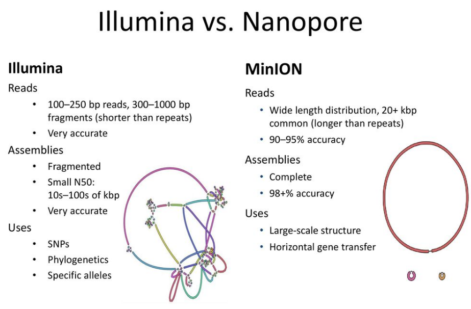
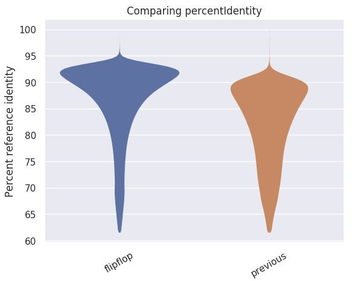
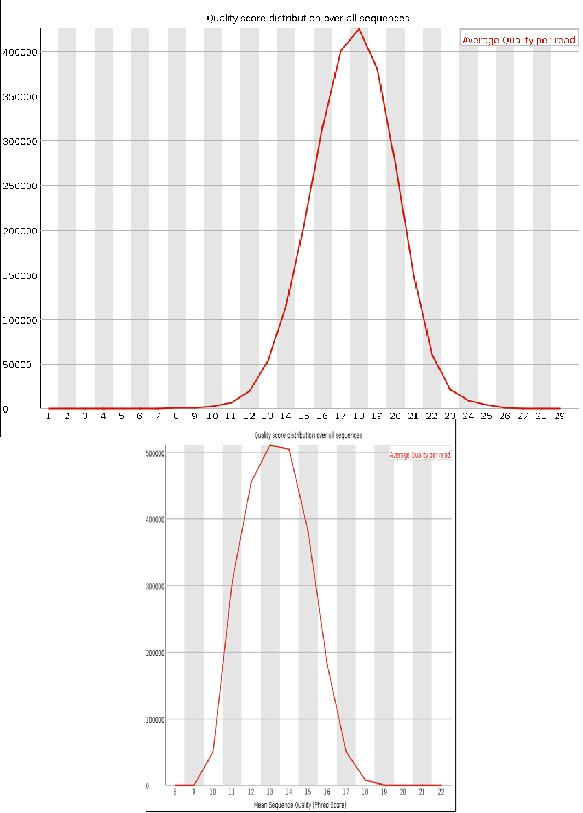

## Antibiotic Resistance Detection using Long-read sequencing

---

## Overview

- Nanopore Sequencing
- Antimicrobial Resistance Detections

---


## Oxford Nanopore Technologies (ONT)


The ONT's fancy animation:


---
## The data flow


---
## ONT data analysis: trends and challenges
</br>
Trends:

* ONT is becoming more **accessible**, **simpler** to deploy with **higher throughputs**
* ONT-related techniques are under rapid and constant tool development

Challenges:

* Accessibility, simplicity → **Broad end-users**
* High throughput → **Resource demanding**
* Rapid change → Tool **upgrade**, **maintenance**, **reproducibility** challenges


---
##.center[ONT's rapid evolution and dynamics]

* Rapid developments in both:
  - the sequencing biotechnology and extraction biochemistry
  - the downstream tools and algorithms


.footnote[.small[[Wick, Judd, and Holt; *Genome Biology*, 2019.]]]


---
## ONT reads

#### Read characteristics

* Single-molecule long reads.

* Average lengths of ~10kb-20kb

  - Not unexpected to observe a few reads of length ~1Mb

  - Longest reported read: 2,272,580 bases\*

* High error rates
  - Raw reads: ~90%-95% accuracy

  - Polished consensus: ~99% accuracy


.footnote[</br>
.small[ \*[Payne, Holmes, Raykan, and Loose; *Bioinformatics*, 2019.]] ]


---
## ONT's competency


#### Major applications

* De novo genome assembly

* Structural variant detection

* Gene  isoform resolution

* Epigenetic  modifications

.footnote[.small[[Sedlazeck, Lee, Darby, and Schatz; *Nature Rev. Genetics*, 2018.]]]


---
.center[]

.footnote[.small[[Louise JUD, ANU Nanopore Workshop]]]


---
template: inverse
## Some tips and personal opinions


---
##.center[Tip-1: check for updates]

* Worth to consider:

  - **re-**base call with alternative algorithms or upgraded versions

  - check for updates of the downstream tools before running the bulk analysis

.center[]

.footnote[.small[[Figure from @Wouter_Decoster]]]


---
##.center[Tip-2: Always check the bulk statistics]
.left[  - Manually look at QC plots (fastqc)  ... and filter the reads appropriately

- QC of the same data with different base callers: ]
.right[]


---
##.center[Genome assembly]

* Some frequently used tools

  - `canu`: accuracy, trio assembly, ...

  - `wtdbg2`: fast, ...

  - `flye`: highly repeated complex genomes, ...

  - `racon`: raw reads correction, ...

  - `unicycler` (`miniasm` + `racon`): bacteria, ...


* A systematic comparison:
  - https://github.com/rrwick/Long-read-assembler-comparison

* Hybrid vs. non-hybrid
  - Hybrid and fusion of short- & long-reads.

  - Is it always better?


---
##.center[Tips for de novo genome assembly]

</br></br></br>

* Try at least two different assemblers

* Think about **your** performance criteria
  - contig size
  - general accuracy
  - accuracy for detecting long repeat detection

* Recommendations are usually organism dependent (genome size, complexity, repeat level)
---
##.center[A plea!]

</br>
### Please push and ask for having a more open ecosystem:
</br>
- favor raising your open questions on the public platforms (Public GitHub repositories, Twitter)

- demonstrate how ONT and users can mutually benefit from an open strategy

- .. and also maybe issue complain time to time :-)

---
template: inverse

## Getting started with the data

---
##.center[Data formats]

##### And finally what we would love to know about.

1. `FASTQ` (and other classic formats)
  - What we would most of the time need to deal with.

2. `FAST5`
  - An ONT flavor of the `HDF5` flexible data storage file format

  - Primarily stores the Nanopore electrical signals

  - Optionally can also store the sequence information (the FASTQ information)


